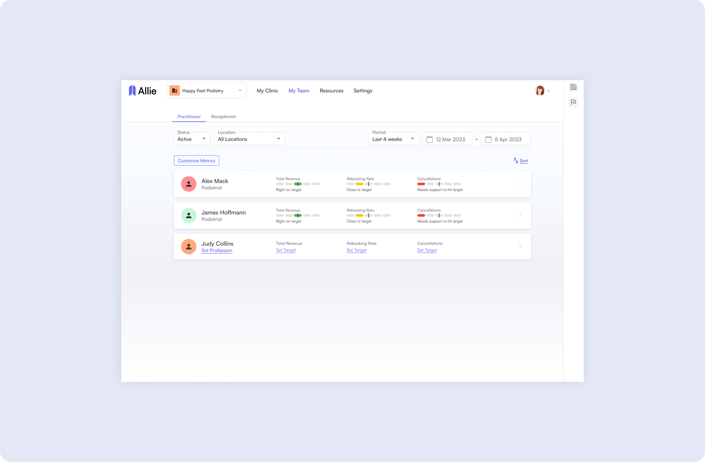
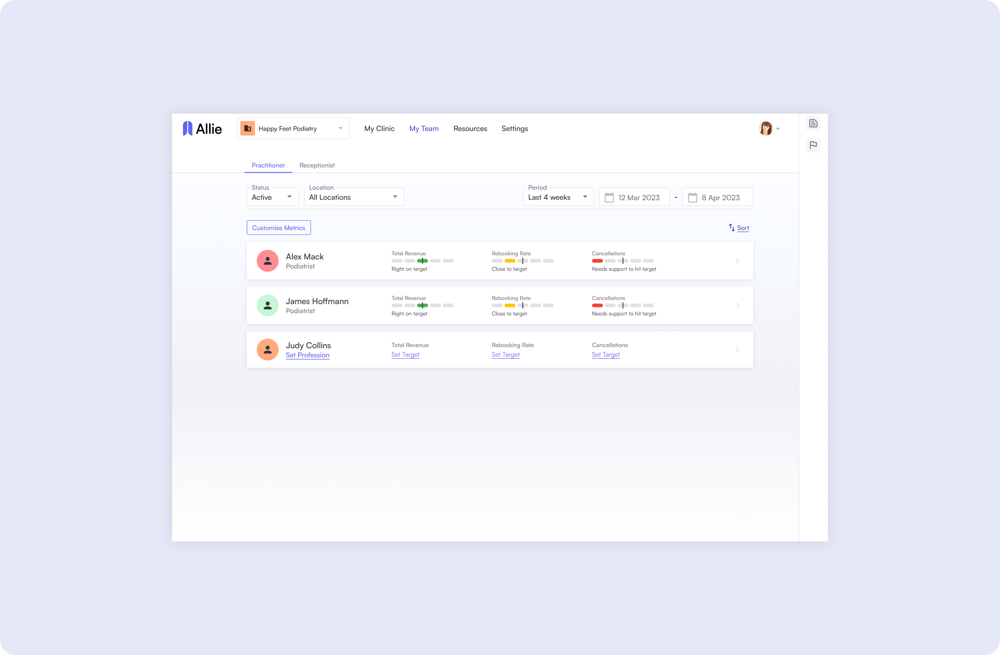
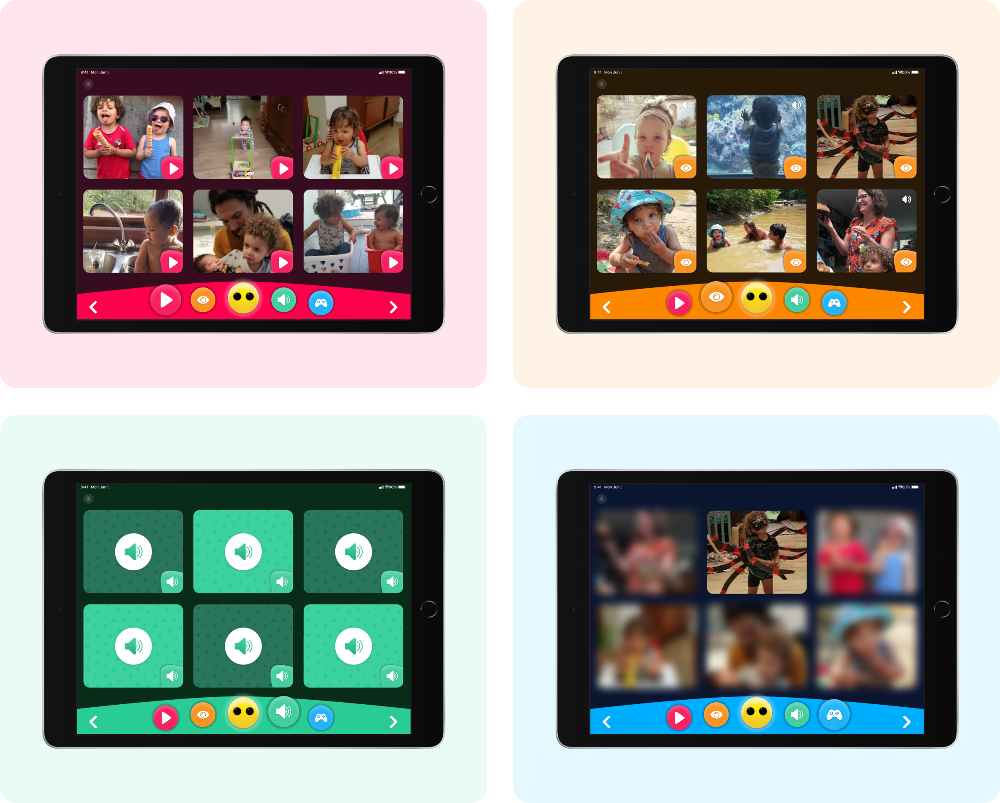
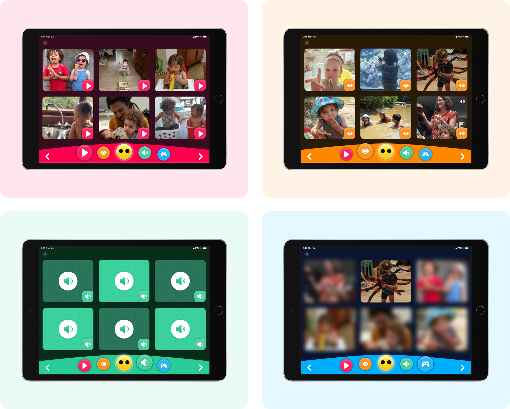
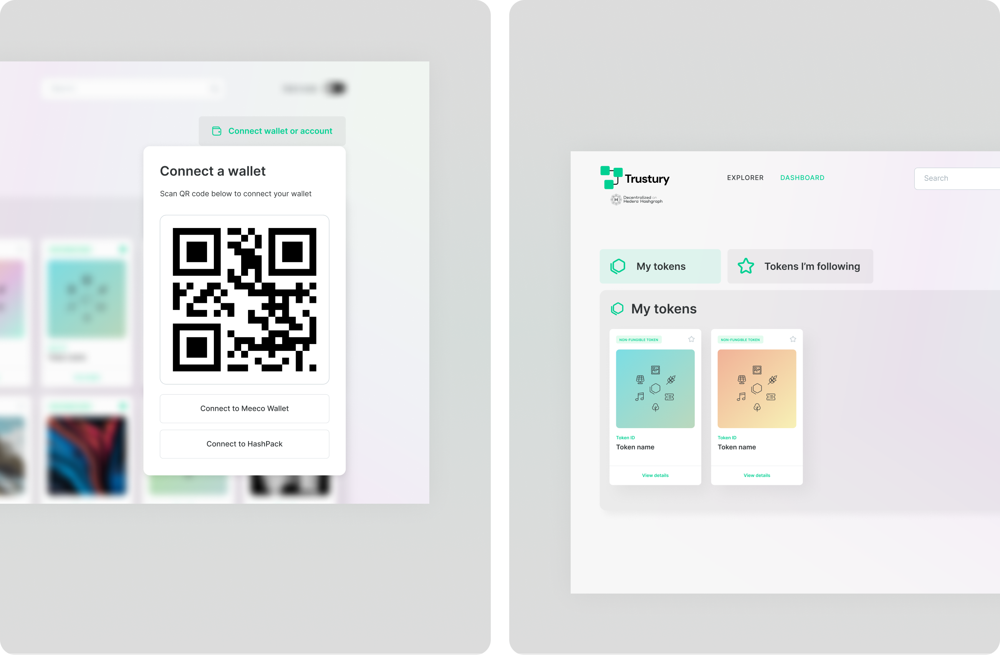
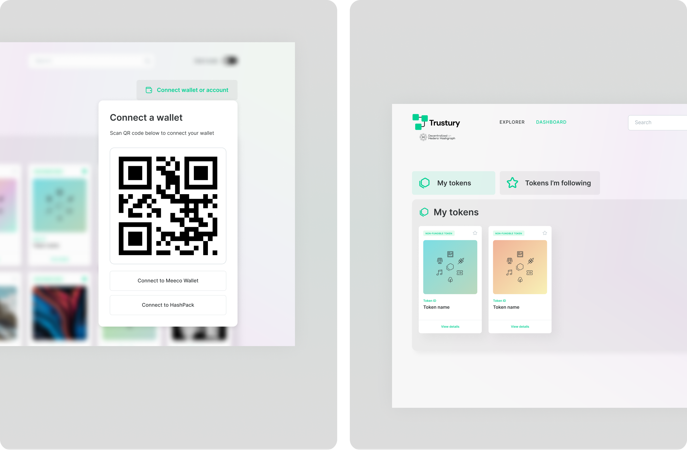

Mars El-Bougrini
Product Design Portfolio
Below is a selection of my product design work from the last decade. These projects span various industries and challenges, showcasing my experience in user research, interface design, and leading design teams to create meaningful digital experiences.
Allie
As Senior Product Designer at Growthbox, I led the complete design vision for Allie, a performance management platform for allied health clinics. I designed optimised interfaces for clinic owners and practitioners, created comprehensive wireframes and prototypes, and built a design system together with our developers based on MUI.
View full case study.
Client: Clinic Mastery


 


UWAI
As Lead Product Designer, I spearheaded a complete redesign of UWAI's gift card savings platform, transforming it from a transactional app into a brand-centric experience. I reimagined the core user flow around favorite brands rather than individual purchases and designed a unified wallet interface for each merchant. Through extensive user research and iterative testing, I created a personalized dashboard that prioritized user relationships with brands over generic catalogs.
View full case study.
Client: International Travel Technology


mIKs-it
As Senior Product Designer at Meeco, I led the design for miKs-it, a digital media platform for children with special needs, collaborating with accessibility experts from Heder school in Belgium. I designed two interconnected applications with distinct user experiences – a highly visual, accessible interface for children and a comprehensive content management tool for parents. The children's interface features high contrast visuals, large touch targets, and compatibility with accessibility devices, while the parent app provides granular permission controls and content management.
View full case study.
Client: Heder School

 



Trustury
As Lead Product Designer at Meeco, I spearheaded the entire creative direction for Trustury, a decentralised carbon token management platform within the Hedera ESG ecosystem. I collaborated with my design team to create a comprehensive design system that made complex blockchain interactions accessible to users unfamiliar with decentralised technologies. Working closely with the development team, I designed interfaces that bridge traditional environmental reporting with cutting-edge blockchain verification.
Client: Hedera
 



Vela Credentials Wallet
The Vela Credentials Wallet provides a secure decentralised platform for workers and workplaces to issue and verify credentials using blockchain technology. I adapted our existing design framework to Vela Solutions' brand requirements and led the design of a mobile credentials verification experience. Working directly with workers and employers, I created interfaces that make complex blockchain-based credential verification feel simple and trustworthy, designing user flows that introduce decentralised identity concepts through familiar, intuitive patterns.
Client: Vela Solutions


Meeco Secure Value Exchange (SVX) Portal
The Secure Value Exchange Portal provides a web-based interface for organisations to manage their verifiable credential ecosystems and facilitate secure data transactions. I established our user research program, designed complex administrative interfaces that remain accessible to users with varying technical expertise, and implemented a comprehensive design system with our development team using Storybook.

Meeco Digital Vault
The Meeco Digital Vault is an end-to-end encrypted secure data storage platform serving both organisations and individuals who need to protect sensitive information. I led the effort completely overhaul the existing digital vault application, creating a new visual direction and comprehensive design system. I balanced sophisticated security features with intuitive user experience design, making complex encryption and data management feel approachable while maintaining the premium aesthetic appropriate for enterprise-grade security.


Fodder Online
Fodder Online is an agricultural marketplace connecting fodder buyers and sellers across Australia's farming community. I worked closely with the intended user base – farmers and agricultural suppliers who traditionally conduct business offline – to design an MVP platform that felt familiar and trustworthy. I used familiar UI patterns and design conventions to minimise the learning curve while incorporating agricultural-specific features like seasonal availability and quality specifications.


Jemsoft Monocular API Dashboard
The Monocular API is an advanced computer vision service that enables developers to integrate sophisticated visual recognition capabilities into their applications. I created a developer-focused dashboard that simplifies the typically complex process of API setup and management. I designed an interface that guides users through API configuration, usage monitoring, and subscription management with clear visual feedback and intuitive workflows.


Palamir Smart City Dashboard
The Palamir Smart City Dashboard is a web-based platform that aggregates multiple data sources to provide city administrators with a comprehensive overview of urban infrastructure and public safety. I transformed their initial prototype into an intuitive smart city dashboard by redesigning complex data visualisations for city administrators. I used strategic color coding and iconography to create clear visual hierarchy within dense, real-time data streams, enabling quick information discovery.


Reach out to me on LinkedIn to collaborate!